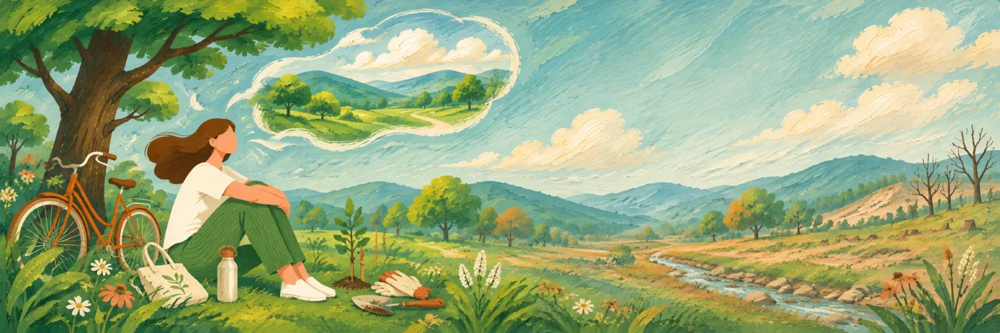

Лесной активизм:
вырастить лессвоими руками
Чтобы помочь лесу, не нужно ждать большой государственной программы. Нужны жёлудь, пластиковая бутылка, немного земли и терпение. Из семени или веточки можно вырастить дерево — у себя на участке, в теплице или в школе вместе с детьми, — а через пару лет высадить его туда, где ему будут рады. Это руководство о том, как это сделать, чтобы деревья выжили, и о том, почему такая работа меняет не только пейзаж, но и людей.
Почему стоит начать с одного жёлудя
В эссе «Дерево из воздуха» мы разбирались, как двадцатитонный дуб вырастает из нескольких граммов жёлудя: почти вся его масса — это углекислый газ из воздуха и вода. Леса вытягивают из атмосферы огромную часть того углерода, который выбрасывает человечество, держат воду и почву, дают дом большинству видов на суше. Естественный следующий вопрос: а что могу сделать я сам?
Самое важное — беречь леса, которые уже растут. Но есть и другое дело, доступное каждому: выращивать новые деревья. Не покупать саженцы в питомнике, а получать их из семян и веточек местных деревьев — так, как это веками делали лесники и садоводы. У такого подхода есть три больших плюса.
- Местные гены. Дерево, выросшее из жёлудя соседнего дуба, приспособлено к вашим зимам, засухам и почвам лучше, чем саженец, привезённый за тысячу километров.
- Почти бесплатно. Семена собираются осенью под ногами, черенки нарезаются при обрезке, горшки делаются из бутылок, которые иначе ушли бы на свалку.
- Это меняет людей. Кто сам вырастил дерево из семечка, начинает иначе смотреть на каждое дерево вокруг. Это, пожалуй, лучший урок длинного горизонта, о котором мы писали в эссе об эволюции сознания.
Слово «активизм» здесь не случайно. Один человек с десятком бутылок может за несколько лет вырастить небольшую рощу. Школа с теплицей — целый лесной питомник. А сеть таких школ и дворов — заметную силу.
Два пути: семя или черенок
Новое дерево можно получить двумя способами. Из семени вырастает новое растение с собственным набором генов — немного не такое, как родители. Из черенка — отрезанной веточки, которая пускает корни, — получается точная генетическая копия материнского дерева, то есть клон. Оба способа полезны, но разным деревьям подходят по-разному.
| Дерево | Способ | Когда собирать | Подготовка | Сложность |
|---|---|---|---|---|
| Дуб черешчатый | жёлуди | сентябрь — октябрь, с земли | не сушить; сеять осенью или хранить во влажном песке в холоде | легко |
| Ива, тополь | черенки | конец зимы — ранняя весна | одревесневшие побеги толщиной с карандаш, сразу в воду или землю | очень легко |
| Клён остролистный | семена-«вертолётики» | сентябрь — октябрь | холодная стратификация 2–3 месяца | легко |
| Рябина | семена из ягод | октябрь, после первых заморозков | отмыть от мякоти, холодная стратификация 3–4 месяца | средне |
| Сосна, ель, лиственница | семена из шишек | зима — ранняя весна, пока шишки закрыты | высушить шишки в тепле, чтобы раскрылись; для сосны полезен месяц холода | средне |
| Берёза | семена-серёжки | конец лета — осень | очень мелкие: не заделывать, сеять на поверхность, нужен свет | средне |
| Липа мелколистная | орешки | сентябрь — октябрь | долгая стратификация (тепло, потом холод); часто всходит на второй год | трудно |
| Туя, можжевельник | черенки | июнь — июль или осень | полуодревесневшие побеги «с пяткой», высокая влажность под колпаком | средне |
Стратификация — главное незнакомое слово этой таблицы. Многие деревья умеренного климата «запрограммированы» не прорастать осенью: иначе нежный росток погиб бы зимой. Семена ждут, пока пройдёт холодный период, и только потом просыпаются. Стратификация — это имитация зимы: семена держат во влажном песке или торфе при температуре около плюс трёх — плюс пяти градусов, то есть в холодильнике или в прикопанном на улице ящике. Самый простой вариант для многих видов — посеять осенью прямо в горшки и оставить их на улице: зима сделает всё сама.
Из семян: начнём с дуба
Дуб — лучший первый проект. Жёлуди крупные, их легко найти и посчитать, они прорастают охотно, а дуб — одно из самых ценных деревьев для природы средней полосы: на нём живут сотни видов насекомых, его жёлуди кормят птиц и зверей.
Где собирать. Под крупными здоровыми дубами в вашем районе, в сентябре и октябре. Берите жёлуди, которые сами упали, тяжёлые, блестящие, без дырочек — дырочка значит, что внутри поселилась личинка.
Проверка водой. Высыпьте жёлуди в ведро с водой. Те, что всплыли, скорее всего пустые или повреждённые, — их выбросьте. Утонувшие годятся.
Не сушите! Это главная ошибка. Жёлуди, в отличие от большинства семян, не переносят пересыхания и быстро теряют всхожесть. Сажайте их сразу или храните до весны в пакете с чуть влажным песком или опилками в холодильнике. Иногда жёлудь пускает корешок уже в пакете — это нормально, просто сажайте аккуратно.
Как сажать. На глубину двух-трёх сантиметров, боком. У дуба в первый же год вырастает длинный стержневой корень — он может уйти на тридцать сантиметров и глубже, пока над землёй ещё скромный росток. Поэтому дубу нужен глубокий горшок. Тут и пригодится бутылка.
Такой же подход годится для конского каштана (его семена тоже нельзя сушить), а для клёна, рябины, хвойных и берёзы — с поправками из таблицы выше. Одно общее правило: собирайте с нескольких разных деревьев. Так будущая роща будет генетически разнообразной, а значит, устойчивее к болезням и переменам климата.
Из черенков: клон из веточки
Черенкование выглядит почти как волшебство: вы срезаете кусочек ветки, ставите его в воду, и через несколько недель у него появляются корни. Новое растение — точная копия материнского. Так можно размножить конкретное дерево, которое вам дорого: старую иву у реки, тополь, посаженный прадедом, удачный сорт смородины.
Проще всего — ивы и тополя. В конце зимы или ранней весной, пока почки не распустились, срежьте прошлогодние побеги толщиной с карандаш и нарежьте их на куски длиной двадцать — двадцать пять сантиметров. Нижний срез сделайте косым, верхний — прямым, чтобы не перепутать, где низ. Поставьте в банку с водой или сразу воткните в горшок с влажной землёй так, чтобы над поверхностью осталось две-три почки. Ивы укореняются настолько охотно, что их черенки иногда пускают корни даже в воткнутом в землю колышке забора.
Ивовая вода. Старый садовый приём: настой из измельчённых веточек ивы, в котором замачивают черенки других растений. Считается, что он помогает укоренению; научные данные здесь скромнее, чем садовые легенды, но вреда от него нет. Надёжнее — аптечные стимуляторы корнеобразования.
Хвойные и кустарники — туя, можжевельник, смородина, бузина — лучше черенкуются летом полуодревесневшими побегами. Таким черенкам нужна высокая влажность: накройте горшок верхней частью той же пластиковой бутылки — получится мини-теплица. Держите в светлом месте без прямого солнца.
Важно знать и ограничение: у большинства «лесных» деревьев — дуба, берёзы, клёна, липы — черенки укореняются плохо. Их выращивают из семян. Это даже к лучшему: лесу нужно разнообразие, а не тысяча копий одного дерева.
Горшок из бутылки
Пластиковые бутылки — почти идеальная тара для выращивания деревьев. Они бесплатные, глубокие, прозрачные (видно корни и влажность), а из одной бутылки получаются сразу два предмета: горшок и колпак-теплица. И это ещё один маленький урок круговорота: то, что было мусором, становится домом для будущего дерева.
Несколько советов, которые сильно повышают выживаемость:
- Отверстия в дне обязательны. Без них вода застаивается, и корни загнивают. Их удобно проплавить нагретым гвоздём — это делает взрослый.
- Корни любят темноту. Прозрачные стенки удобны для наблюдения, но на свету на корнях и земле разрастаются водоросли. Оберните горшок тёмной бумагой или плотным пакетом, а смотреть на корни можно, снимая обёртку.
- Горсть лесной почвы. Возьмите немного земли из-под того же вида дерева, с которого собирали семена. Вместе с ней в горшок попадут грибы-микоризы, с которыми корни деревьев живут в союзе: грибы помогают добывать воду и минералы, дерево делится с ними сахарами.
- Земля попроще. Подойдёт садовая земля, смешанная с компостом и песком. Слишком «жирные» магазинные смеси для рассады молодым деревьям не нужны.
- Бутылки ставьте плотно в ящик или коробку — так они не падают и меньше промерзают зимой.
Зимовка: теплица, но не тёплая
Самый неочевидный момент — зима. Кажется, что молодые деревца нужно занести в тепло. Это ошибка. Деревья нашего климата должны пройти зимний покой: без холодного периода они не «перезагружаются», весной просыпаются вяло или не просыпаются вовсе. Дуб на подоконнике в квартире — грустное зрелище.
Но и бросить горшки на морозе нельзя. В земле корни дерева защищены толщей почвы и снегом, а в маленьком горшке земля промерзает насквозь, и корни, которые чувствительнее веток, могут погибнуть. Поэтому задача зимой — держать деревья в холоде, но без сильного промерзания корней.
Вот почему теплица так ценна для лесного активизма. Неотапливаемая теплица смягчает морозы, защищает от ветра, мышей (если положить сетку) и зимних оттепелей с последующим льдом, а ранней весной даёт деревцам фору. Отапливать её не нужно — наоборот, в тёплой теплице деревья проснутся раньше времени. Если теплицы нет, отлично работает прикопка горшков в саду под слоем листвы и снега.
Весной, когда почки начнут набухать, горшки выставляют на открытый воздух, в светлое место с полуденной тенью. Главная летняя забота — полив: в маленьком горшке земля пересыхает за один жаркий день.
Высадка: самый ответственный день
Куда сажать. Это самое важное решение — и тут нельзя действовать самовольно. Деревья, посаженные без разрешения на городской или чужой земле, часто выкашивают или вырубают при первом благоустройстве. Договоритесь заранее: с администрацией района или поселения, с управляющей компанией дома, с лесничеством, с садовым товариществом, с владельцем участка, со школой. Во многих регионах проходят официальные акции посадки леса — к ним можно присоединиться со своими саженцами.
Подходящие места — там, где деревья были и где им рады: старые вырубки и гари, овраги, которые размывает вода, пустыри у школ и домов, берега рек, где нужно укрепить почву, полосы вдоль полей. Неподходящие — луга, степи, болота и поляны, которые сами по себе ценны как экосистемы; места под линиями электропередачи и над трубами; слишком близко к стенам домов.
Когда. Лучшее время — середина осени, когда листья опали, или ранняя весна, пока не распустились почки. Летняя посадка возможна для деревьев из горшков, но требует обильного полива.
Как. Небольшие саженцы — тридцать — шестьдесят сантиметров — приживаются лучше крупных: их корни меньше страдают. Ямку копают чуть больше кома земли, саженец сажают на ту же глубину, на которой он рос в горшке, землю утаптывают и обильно поливают. Вокруг ствола — круг из мульчи: листвы, опилок или скошенной травы. Это удерживает влагу и не даёт траве заглушить деревце. Там, где много зайцев или косуль, ствол защищают сеткой или пластиковой трубкой.
И главное — не бросать. Первые три — пять лет молодому дереву нужна помощь: полив в засушливое лето, прополка, проверка защиты. Именно здесь большинство посадок терпит неудачу. Поэтому лучше посадить двадцать деревьев и выходить их, чем двести и забыть.
Лес в школе
Школа с теплицей — идеальное место для лесного активизма. Здесь есть всё: дети, которые с удовольствием собирают жёлуди, учителя, которые могут превратить проект в уроки биологии, географии, математики и труда, и годы, за которые деревья успевают вырасти. А главное — дети видят результат своего труда, который переживёт их школьные годы.
Идея простая. Каждый ученик приносит из дома одну-две чистые пластиковые бутылки — они станут горшками. Осенью класс идёт за семенами в ближайший парк или лес, весной в теплице появляются всходы, а через два-три года — день посадки в месте, которое школа заранее согласовала: на школьном участке, в соседнем сквере, на склоне оврага, в лесничестве.
Чему это учит. Биологии — на живом материале: прорастание, фотосинтез, корни, грибы-микоризы. Математике — каждый ученик меряет высоту своего дерева и строит график роста. Экологии — откуда берётся лес и что ему угрожает. Труду — инструменты, горшки, посадка. И, может быть, самому важному: ответственности и терпению. Дерево нельзя ускорить, его можно только не бросить.
Паспорт дерева. Простая и очень действенная находка: у каждого деревца есть карточка с номером, видом, датой посева, именем «хозяина» и местом, где собраны семена. После высадки в паспорт записывают координаты. Через двадцать лет бывший ученик сможет прийти и найти своё дерево.
Лето. Самое слабое место школьного питомника — каникулы. Решить его можно графиком дежурств родителей и учеников, капельным поливом из тех же бутылок или тем, что на лето каждый ученик забирает своё дерево домой.
Безопасность. Режут бутылки и проплавляют отверстия взрослые или старшеклассники под присмотром. Семена конского каштана и ягоды тиса ядовиты — их не пробуют на вкус. После работы с землёй моют руки.
Бонсай: лес в одном горшке
Часть выращенных деревьев можно превратить в бонсай — маленькие деревья в неглубоких плошках, похожие на старые деревья в природе. Это искусство пришло в Японию из Китая больше тысячи лет назад и сегодня популярно во всём мире. Для школы это отдельный, очень благодарный урок: дети учатся наблюдать, как растёт дерево, и бережно на это влиять.
Важно понимать: бонсай — не карликовая порода. Это обычное дерево, которое остаётся маленьким благодаря неглубокому горшку, обрезке корней и ветвей. И ещё одно: бонсай из наших деревьев — уличное растение. Сосне, клёну или берёзе в плошке точно так же нужна холодная зимовка, как и их собратьям в бутылках.
- сосна обыкновенная
- лиственница
- можжевельник
- клён (лучше мелколистные виды)
- вяз, ильм
- липа мелколистная
- боярышник
- берёза
- не держать в квартире зимой
- не оставлять проволоку надолго — она врастает в кору
- не обрезать всё сразу — дерево ослабнет
Урок бонсай за 45 минут. Для первого занятия подойдёт двух- или трёхлетнее деревце из школьного питомника. Сначала — рассказ о том, что такое бонсай и почему это про терпение, а не про скорость. Потом каждый рассматривает своё дерево: где у него «лицо», какая ветка самая красивая, какой образ хочется получить — дерево на ветру, одинокая сосна на скале, маленькая роща. Затем — пересадка в неглубокую плошку с аккуратной подрезкой самых длинных корней и первая лёгкая обрезка ветвей. Закрепить результат можно рисунком: «каким я вижу это дерево через десять лет».
Дальше бонсай становится долгим проектом — на годы. Весной прищипывать молодые побеги, раз в несколько лет пересаживать, следить за поливом: в мелкой плошке земля высыхает очень быстро. Это, пожалуй, самый прямой способ научиться замечать, как живёт дерево.
Честно скажем: бонсай не сажает лес. Это искусство, а не восстановление природы. Но он делает то, что не всегда удаётся лекциям: заставляет годами смотреть на одно дерево внимательно. А человек, который так научился смотреть, вряд ли равнодушно пройдёт мимо вырубки.
Честный взгляд: частые ошибки
Посадить и забыть. Главная беда массовых посадок во всём мире: деревья сажают ради красивой фотографии, а через пару лет большая часть погибает от засухи, травы или вытаптывания. Лесной активизм начинается с посадки, но измеряется выжившими деревьями.
Чужие виды. Не все деревья полезны. Клён ясенелистный — американский гость, который быстро растёт и легко размножается, — в России стал агрессивным захватчиком: он вытесняет местные растения по берегам рек и на пустырях. На юге похожая история с белой акацией. Выращивайте местные виды и не размножайте инвазивные, даже если они очень неприхотливы.
Не там. Дерево — не всегда лучший ответ. Цветущий луг, степь, болото сами по себе ценные экосистемы и хорошие хранилища углерода. Обсадить их деревьями — значит их уничтожить. Сажайте там, где лес был или где деревья действительно нужны людям и природе.
Без согласования. Деревья, посаженные самовольно, часто уничтожают при первом же благоустройстве или ремонте коммуникаций. Час переговоров с хозяином земли бережёт годы работы.
Вместо, а не вместе. Посадка деревьев не отменяет необходимости сокращать выбросы и беречь старые леса. Один столетний дуб хранит больше углерода и даёт больше жизни, чем сотня саженцев. Поэтому лесной активизм — это и защита существующих деревьев: участие в общественных обсуждениях, внимание к вырубкам в своём районе, уход за деревьями во дворе.
Итог: роща начинается с бутылки
Вырастить дерево из жёлудя или веточки может каждый. Нужно немного места под открытым небом, лучше — неотапливаемая теплица, горсть земли, пластиковые бутылки и два-три года терпения. Нужно помнить про холодную зиму, глубокий горшок для дуба, местные виды и согласованное место посадки. И нужно не бросать дерево после того, как оно оказалось в земле.
В школе это превращается в нечто большее: в живой учебник биологии, в общее дело класса, в урок бонсай, в паспорт дерева, который через двадцать лет приведёт взрослого человека к его собственному дубу. А если таких школ и дворов станет много, они сложатся в ту самую сеть мест, о которой мы писали в эссе о сетевых сообществах: каждое укоренено в своей земле, и все вместе делятся семенами, опытом и радостью.
Дерево, как мы помним, почти целиком сделано из воздуха. Значит, каждое выращенное вами дерево — это кусочек атмосферы, возвращённый в живое. Начните этой осенью. Выйдите к ближайшему дубу и поднимите с земли один жёлудь.
Читайте также: Как устроен лес: подземная сеть · Школа под открытым небом · Компост в квартире · Дерево из воздуха · Эволюция сознания — недостающее звено устойчивости · Сетевые государства: объединить людей не страхом · Стрелка назад: возврат вещества · Лес как лекарство · Заповедник: идея охраны природы, которая не про нас
- Справочная литература по лесному семеноводству и выращиванию посадочного материала (лесные питомники средней полосы России) — сроки сбора, стратификация, способы размножения.
- Royal Horticultural Society — руководства по выращиванию деревьев из семян и по черенкованию.
- The Woodland Trust — рекомендации по выращиванию дуба из жёлудя и школьным посадкам.
- Smith S. E., Read D. J. Mycorrhizal Symbiosis (3rd ed., 2008) — роль микоризы для деревьев.
- Виноградова Ю. К., Майоров С. Р., Хорун Л. В. Чёрная книга флоры Средней России (2010) — инвазивные виды, в том числе клён ясенелистный.
- Holl K. D., Brancalion P. H. S. (2020). Tree planting is not a simple solution. Science 368, 580–581.
- Di Sacco A. et al. (2021). Ten golden rules for reforestation to optimize carbon sequestration, biodiversity recovery and livelihood benefits. Global Change Biology 27, 1328–1348.
- Naka J. Bonsai Techniques I (1973) — классическое руководство по основам бонсай.